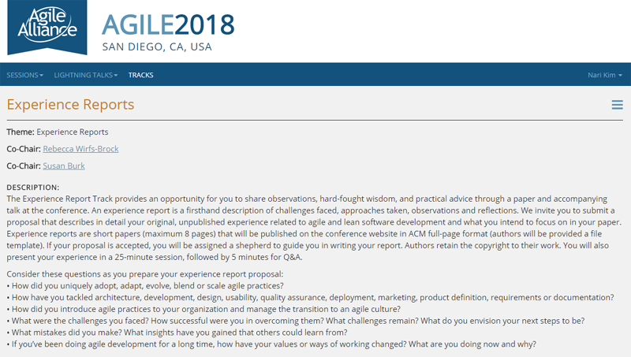
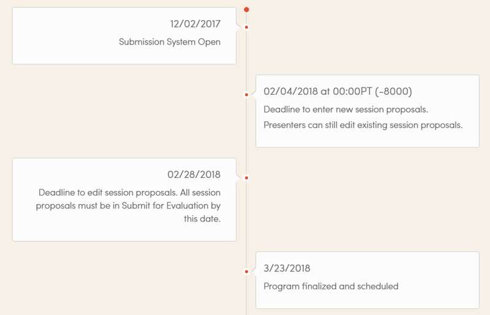
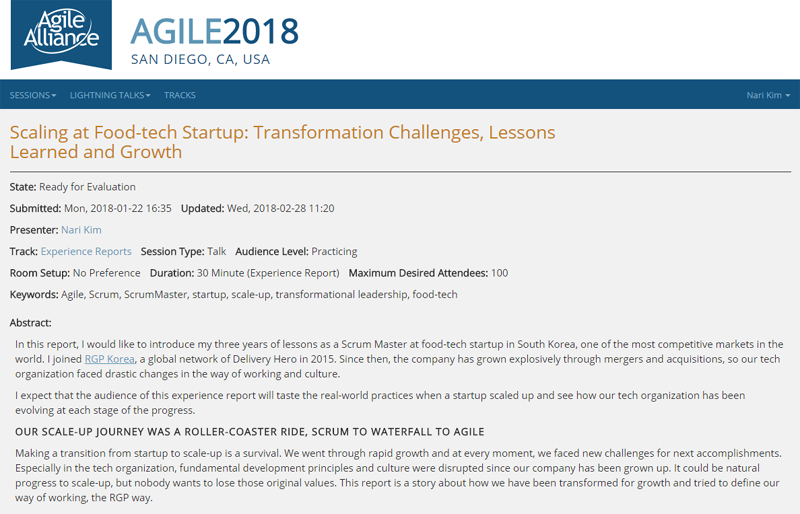
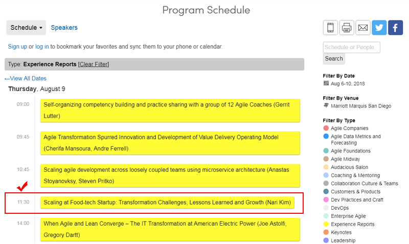

안녕하세요, 기술연구소에서 스크럼 마스터를 맡고 있는 김나리입니다. 지난 3월, 저희 기술블로그에 스타트업에서 스케일업으로라는 글을 올렸었는데요, 관련 내용을 보다 발전시켜, 올해 8월 미국 San Diego에서 개최되는 Agile 2018 컨퍼런스에서 발표할 수 있는 기회를 얻게 되었습니다.
Agile 2018 컨퍼런스는 올해로 개최 17년째를 맞이하는 비영리 국제 컨퍼런스인데요, 매년 약 40개국에서 애자일 분야의 전문가 및 실무자들이 참석합니다. 프로그램은 애자일 및 리더십, 협업, 코칭, 커뮤니케이션 등 다양한 주제의 트랙으로 구성되며 약 250개 이상의 세션 발표가 진행되는 대규모 이벤트입니다.
업계의 다양한 전문가들이 참여하는 세션 트랙 중, 저는 Experience Reports 트랙 발표자로 지원했는데요, 발표 뿐만 아니라 전체 트랙 중 유일하게 최대 8페이지 분량의 서면 리포트를 작성합니다. 부담감은 크지만 SM으로 제가 경험하고 배운 점을 정리하고 공유하는데 가장 적합한 트랙이라고 생각했고, 저희 기술연구소의 성장스토리로서도 의미있는 결과물이 될거라는 기대가 있었습니다. 물론 과정이 빡세기 때문에 첫 발표자로 지원하는 저에게도 승산이 있을 거라는 전략도 있었고요:D

Experience Reports 트랙 소개 및 제안서 작성 안내 - 실제 실무 현장에서 Agile을 도입/활용하는 과정에서의 시행 착오와 배운 점에 대해 공유하는 트랙. 트랙 의장 (Track Chairs)및 심사팀의 검토를 거쳐 최종 발표자를 선정한다.
도전의 시작 - CTO님의 제안 (#떡밥)
올해부터 저희 기술연구소 구성원들의 역량 향상을 목적으로 해외 컨퍼런스를 지원한다는 현준(CTO)님의 떡밥이 그 시작이었습니다. 두둥! 개발자는 아니지만, Google I/O, WWDC 듣기만 해도 설레는 기술 컨퍼런스는 물론이고, 기대보다 별로라는 평도 있으나 평소에 TechCrunch Disrupt 같은 행사에 관심이 많았던 저로서는 너무나 참여해보고 싶었던 것이죠.
일단 기술 컨퍼런스는 개발자 분들의 참여가 우선시 되는게 당연하므로, 스크럼마스터로서 참여해보고 싶은 컨퍼런스를 찾아보기 시작했고, Agile 2018이 8월에 개최된다는 정보를 알게 되었습니다. (무려 2017년 말로 거슬러 갑니다) 때마침, 회식 자리에서 해외 컨퍼런스 지원, 구성원 동기부여/커리어 패스에 대한 나름 진지한 이야기들이 오고 갔는데요, 신입사원은 아니지만 패기있게(?) 현준님께 말씀드렸죠.
나(SM): 스크럼 마스터로서 뭔가 정점을 찍어보고 싶어요, 제가 어디까지 성장할 수 있는지 궁금한데, Agile 2018에 가면 너무너무너무 큰 동기부여가 될 것 같습니드아아-
현준님(CTO): 그런 목표가 있으면 컨퍼런스 참석자 말고, 발표자로 가야 더 의미있을 거 같은데? 의외로 허들이 높지 않은 컨퍼런스도 많으니 한번 지원해봐요. 발표자되면 보내줄게.
나(SM): …(동공지진)
지원하는데 의의를 두자 - Session Proposal 작성
일단 지원하는 것만으로도 의미있는 경험이 될 것 같아, 보다 구체적으로 프로세스를 확인해보았습니다.

Agile 2018 - Submission Process & Timeline
Agile 2018 발표자 선정 과정은 Agile 2018 웹사이트 내 Submission Process 및 타임라인이 함께 공지되는데요, 자체적으로 운영하는 Submission System 웹사이트에서 총 12주에 걸쳐 트랙별 발표 제안서 등록을 받고, 심사를 거쳐 최종 발표자를 선정합니다.
이 프로세스의 독특한 점은, 발표 제안서만 제출하고 끝나는 것이 아니라, 다른 지원자의 발표 제안서도 열람할 수 있다는 것인데요. 덕분에 초심자인 저로서는 벤치마킹과 Case Study를 할 수 있는 기회로 활용했습니다.
1. 초반 탐색기: 지식탐험 신세계
Submission System을 통해 공유된 다양한 주제의 발표 제안서를 보면서, 비슷한 고민과 어려움을 겪은 팀/조직들의 사례를 알게 되었고, 해결방식에 대해 우리 조직에 응용할 수 있는 부분은 없을지도 눈여겨 보기도 했습니다. 그래서 초반에는 다른 지원자들의 제안서를 탐색하는데 시간을 많이 들였어요. 그 과정에서 잘 쓴 제안서들은 템플릿과 구성을 참고해보고, 제가 쓸 제안서에 대한 아웃라인을 구상해나가기 시작했습니다. 물론 상당 수의 지원자들이 수년 전부터 매년 참가해온 베테랑 발표자들이어서 초심자가 선정되긴 쉽진 않겠다는 생각은 들었습니다만, 뭔가 새로운 세계를 탐험하는 기분이어서 설레고 즐거운 마음이 더 컸습니다!
2. 중반: 피드백과 제안서 업데이트
탐색을 끝내고 본격적으로 제안서를 작성을 시작했는데요, 주중에는 퇴근 후 육아로 시간을 내기 어려웠고, 주말 스타*스 커피의 힘을 받아 초안을 완성하게 되었습니다!
어떤 내용을 제안서에 쓰는가?
필수로 작성해야하는 항목이 템플릿으로 정해져 있었는데요, 제 발표 주제의 경우, 요기요&배달통이 스타트업에서 현재에 이르기까지 성장 단계별로 겪었던 어려움과 어떻게 극복해왔는지에 대해 다루기 때문에 Stage 1~3로 나누어 보다 체계적으로 스토리를 전달하고자 했습니다.
Title :
Scaling at Food-tech Startup - Transformation Challenges, Lessons Learned and GrowthAbstract :
발표 내용에 대한 요약 (프로그램 공지 - Conference Directory에 전체 공개되는 내용)Lessons Learned from Your Experience :
발표 내용에 담긴 경험을 통해 배운 점 (해당 경험이 컨퍼런스 참가자들에게도 유의미한 내용인가? 라는 측면에서)Information about the Experience :
발표에서 다룰 내용 및 관련된 경험, 발표자의 관련 경력에 대해 구체적으로 기술하는 항목. Track Chairs 및 심사팀에게만 공개되는 내용Presentation History :
본 발표 내용이 과거에 다른 컨퍼런스 등을 통해 이미 공개되었던 내용인지, 처음 발표되는 내용인지에 대해 기술. 또는 발표자의 관련 Presentation 경력. (처음 발표되는 내용이고, 발표자로서의 역량에 대해 심사팀에 신뢰를 줄 수 있어야 한다는 판단 하에 과거 Ignite Seoul Speaker 경험 등 대중 앞에서 Presentation 했던 경험을 함께 기재했습니다.)
최종 제출까지의 제안서 상태는 Draft > Feedback Requested > Ready For Evaluation 3단계로 구성되는데요, 초안 등록 후 Feedback Requested 상태로 변경하면 해당 트랙의 Chair는 물론, 다른 지원자의 코멘트도 받을 수 있어서, 부족한 점을 보완할 수 있었습니다. 실제로 Track Chair의 조언(아래 코멘트 참조)이 가장 실질적인 도움을 주었는데요, 많은 사람들이 다루는 Transformation이라는 주제에 대해 저만의 독특한 시각과 경험, 배운 점을 더 반영했으면 좋겠다는 의견이었어요.
“We get many proposals about transformations, and naturally, transformations have a lot in common from one organization to another. So, it’s important to include things which will help the reviewers know aspects of the transformation and your experience during it which you believe may be unique and provide unique learnings for the attendees of the conference.” - Susan Burk, Co-Chair
이러한 피드백을 토대로 제안서를 계속 보완해 나갔고, 이 도전의 시작점을 만들어주신 CTO 현준님이 빨간펜 첨삭 으로 지원사격을 해주신 덕분에, 더 탄탄한 제안서를 완성할 수 있었습니다!
3. 최종 제출: 발표자 선정 및 프로그램 공지

Scaling at Food-tech Startup을 주제로 발표 제안서 최종 제출!
드디어 Ready For Evaluation으로 상태 변경을 마치고, 약 한 달 정도를 기다린 것 같습니다. 기대 하지 말아야지, 마음 비워야지 하면서도 메일 알림이 오면 그냥 지나치지 못했었네요 하하. 그리고 기다리던 메일이 왔습니다! 심쿵을 부르는 메일 제목!! 얼떨떨하면서도, 성취감이 컸는데요- 이제 시작이구나 싶었던 것이 8페이지 분량의 영문리포트 작성이 기다리고 있었기 때문이죠.
“Your experience report proposal has been accepted.”
발표자 선정과 함께 Agile 2018 프로그램 공지를 통해 전체 발표 세션 일정이 공유되었습니다. 올해는 1529개의 발표제안서가 등록되었고, 266개 세션이 운영된다고 하네요! 저희 RGP Korea 발표는 8월 9일 목요일에 진행됩니다.
- Agile 2018 전체 프로그램 소개 (링크)
- RGP Korea 발표 세션 소개 - Scaling at Food-tech Startup: Transformation Challenges, Lessons Learned and Growth (링크)

프로그램 공지 이후 지난 4월부터 리포트 작성에 돌입했고, 3개월에 걸쳐 작성을 마친 상태인데요, 이 과정은 2부 포스팅을 통해 공유드리도록 하겠습니다. (리포트 작성마저 2주 단위 스프린트로…)
발표자 지원을 통해 배운 점
Agile 방법론의 철학이 Agile 2018 컨퍼런스의 발표자 선정 과정에서도 그대로 체화되어 있다는 느낌을 많이 받았습니다. 최근 저희 기술연구소 Squad 조직에 Agile Practice 적용을 확대하고 있는데요, 개발방법론을 넘어, 해당 Framework의 많은 장치들이 코칭 및 피드백을 통해 원활한 커뮤니케이션을 유도하고, 팀원들이 함께 공동의 목표를 이루어 나가도록 돕기 때문입니다. 발표자 지원 과정에서 받은 피드백과 코칭 또한 저를 더 성장시키고, 제가 목표한 바를 이룰 수 있도록 도움을 준 것 같습니다.
마치며
포스팅을 마치기 전에 이런 점도 궁금해하시지 않을까해서 남겨봅니다.
Q1. 글로벌 컨퍼런스 발표자에게 필요한 영어 실력은?
이메일 및 짧은 리포트 작성과 PPT 발표 가능한 수준의 영어 “커뮤니케이션” 능력이 필요하다고 봅니다. 영어보다 커뮤니케이션을 강조한 이유는, 저도 네이티브 스피커가 아니기 때문인데요, 국내에서만 공부했지만 영어를 쓸 수 있는 환경(회사 포함)을 적극적으로 찾았던 편이예요. RGP Korea는 이러한 면에 있어, Delivery Hero라는 글로벌 네트워크를 갖고 있기 때문에 일정 수준의 영어를 업무적으로 사용하고 있어 큰 도움이 되었습니다.
Q2. 발표자 혜택이 있나요?
컨퍼런스 주최 측에서 Accepted Speaker Honorarium Packages로 컨퍼런스 참가비($2499)와 개최 장소인 Marriott Marquis San Diego 호텔의 숙박(4박)을 제공합니다. 이와 더불어, 저희 기술연구소로부터 해외출장에 필요한 항공편 등을 지원받을 수 있었습니다!
마지막으로 기술연구소 구성원으로서, 글로벌로 시야를 넓히고 역량을 확장할 수 있는 기회와 조언을 주신 CTO 현준님께 진심으로 감사의 말씀 드립니다.
김나리, Scrum Master @RGP Korea